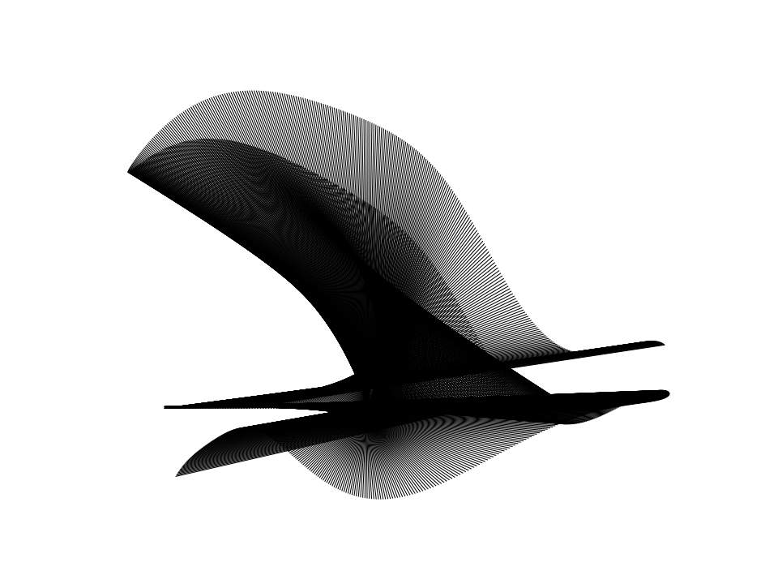
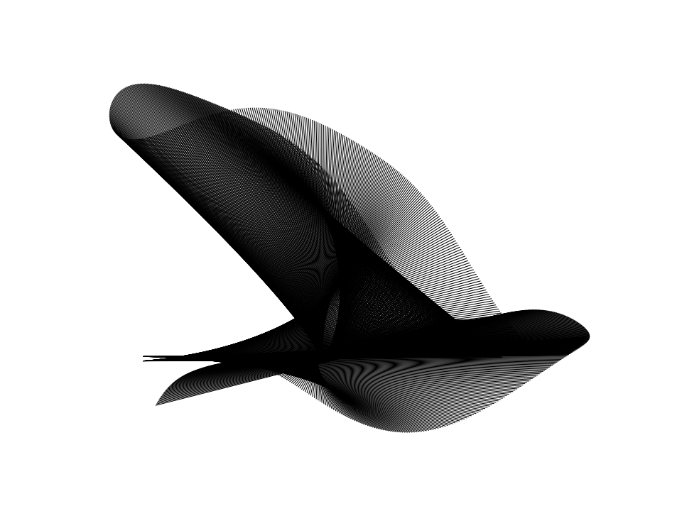
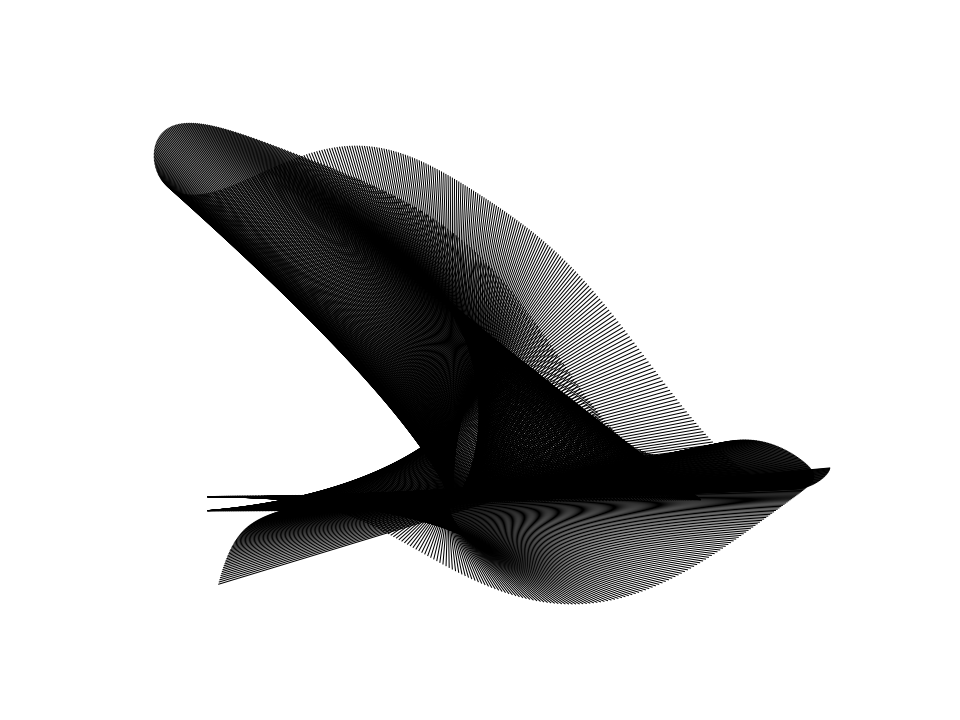
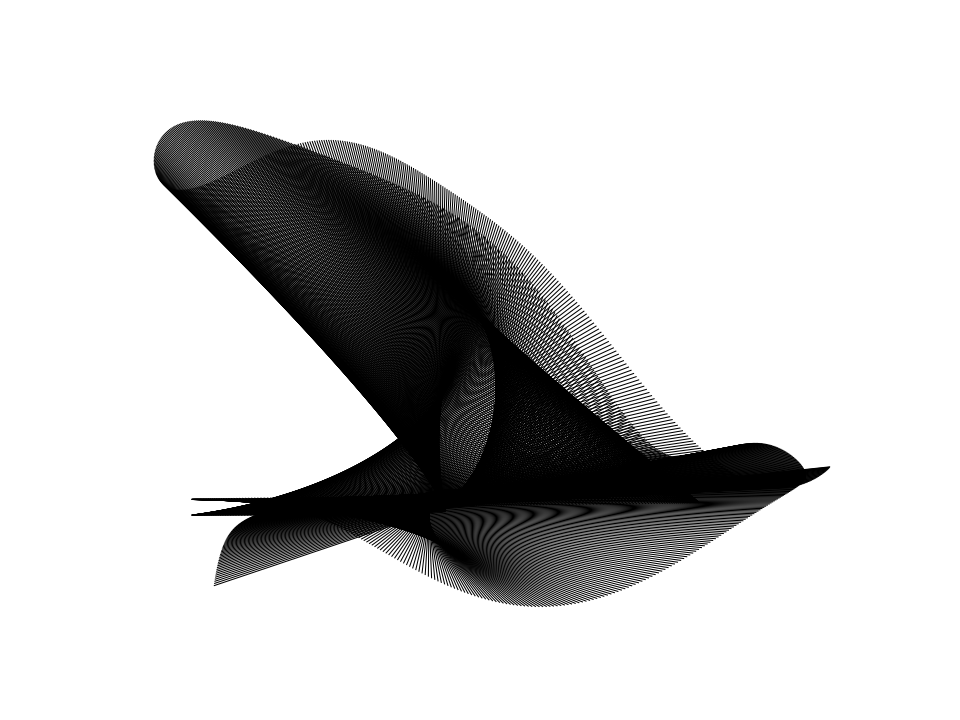

Parametric Line Art
Generative line-art diagrams built from a thousand trig-defined line segments.

[98, 215, 117, 371],
rendered from 1500 straight line segments whose overlapping envelopes resemble a flying bird.
Overview
This experiment generates abstract figures from short trigonometric equations. Each figure is built from a large number of straight line segments whose endpoints are fixed by a small set of coefficients, so that very simple equations give rise to intricate overlapping forms. The goal is to search the space of these equations for those that produce a recognisable figure, and for each one to recover the single closed-form formula that generates it.
The two endpoints of the $k$-th segment are given by smooth functions of $k$, so as $k$ runs from $0$ to $N$ the segments fan out and their overlaps form moiré-like envelopes. For a suitable choice of coefficients these envelopes resolve into a coherent shape, such as the bird in Figure 1, even though every segment is placed by the same fixed set of equations.
The equations
A single endpoint coordinate is a sum of one sine and one cosine term, each raised to an integer power:
$$ a_1\,\sin\!\left(c_1\pi k + d_1\pi\right)^{b_1} \;+\; a_2\,\cos\!\left(c_2\pi k + d_2\pi\right)^{b_2} $$
A segment has two endpoints, $P_1 = (x_1, y_1)$ and $P_2 = (x_2, y_2)$, so four coordinates in all, each with its own sine and cosine term. That makes four coefficient families, stored as $2\times2\times2$ arrays indexed by (coordinate row, sin/cos, endpoint):
- $a$: amplitudes, drawn uniformly from $[-5, 5]$.
- $b$: integer powers $0$ to $5$. The power sharpens the trigonometric terms into the cusps and flares characteristic of each figure.
- $c$: integer frequencies $-6$ to $6$. Restricting them to integers keeps the curves coherent rather than drifting.
- $d$: phase offsets, drawn uniformly from $[-10, 10]$.
For the bird in Figure 1, after the cleaning step described below rounds the coefficients to fractions, the two endpoints are, for $k = 1, 2, \ldots, 1500$:
$$ P_1 = \left( \tfrac{7}{3}\,\sin\!\left(\tfrac{3\pi k}{1500} - \tfrac{19}{26}\pi\right)^{5} - \tfrac{1}{9},\ \ -\tfrac{6}{47}\,\sin\!\left(\tfrac{-\pi k}{1500} + \tfrac{25}{44}\pi\right)^{3} \right) $$
$$ P_2 = \left( \tfrac{11}{18}\,\sin\!\left(\tfrac{-4\pi k}{1500} + \tfrac{4}{9}\pi\right)^{2} + \tfrac{17}{6}\,\cos\!\left(\tfrac{3\pi k}{1500}\right),\ \ -\tfrac{23}{6}\,\sin\!\left(\tfrac{-\pi k}{1500} - \tfrac{3}{17}\pi\right)^{3} - \tfrac{30}{31}\,\cos\!\left(\tfrac{4\pi k}{1500} - \tfrac{1}{4}\pi\right)^{4} \right) $$
The coefficients begin as floating-point values and are rounded to these fractions by the cleaning step described below. Terms whose frequency is zero are constant in $k$ and collapse to a single number, such as the $-\tfrac{1}{9}$ in $x_1$; terms of negligible amplitude are dropped entirely, which accounts for the differing lengths of the coordinates.
Finding a diagram
Random coefficients rarely produce a usable figure, so we search for one in four stages.
The first stage is a rough scan: we evaluate a thousand random seeds, save a low-resolution thumbnail for each, and pick out a small number of promising shapes.
The second stage refines a chosen diagram by generating variations of it. We hold the powers $b$ and frequencies $c$ fixed, since altering them reshapes the figure entirely, and perturb only the amplitudes $a$ and phases $d$ with Gaussian noise. The perturbation magnitude shrinks at each level by a factor of $0.8$, so early levels explore broadly and later levels refine. We keep the best variation, append its index to the lineage, and repeat, converging on a final figure one index at a time.
The progression below is one such chain of four refinement steps converging on the bird.




The search is made practical by a reproducibility scheme. A diagram is identified entirely by its
lineage path, a list of integers such as [98, 215, 117, 371]: the first is
the base seed, and each subsequent index selects a variation. Each perturbation is seeded by the
path prefix that produced it, so we can reconstruct any node in the tree from its integers alone,
without storing intermediate coefficients or images.
The third stage cleans the coefficients. We round each floating-point value to a nearby fraction with a bounded denominator (20 for most terms, 50 for high-power terms, where the figure is more sensitive), and collapse any zero-frequency term, which is constant in $k$, into a single rational number. The result is a compact closed-form expression, while the rendered figure is visually unchanged.
The fourth stage renders the final figure from the cleaned coefficients, producing the high-resolution image, the LaTeX formula, and an animation of the segments drawn in sequence.

Implementation
The full scripts are on the linked GitHub. The two functions below are central:
coeffs_for_path reconstructs any diagram's coefficients from its lineage path, and
calc_endpoints evaluates those coefficients to give the segment endpoints.
def coeffs_for_path(path):
# path[0] is the base seed; each later index selects a perturbation
np.random.seed(path[0])
a = np.random.uniform(-5, 5, (2, 2, 2))
b = np.random.randint(0, 6, (2, 2, 2))
c = np.random.randint(-6, 7, (2, 2, 2)) # integer frequencies -> coherent curves
d = np.random.uniform(-10, 10, (2, 2, 2))
for depth in range(1, len(path)):
rng = np.random.default_rng(tuple(path[:depth + 1]))
scale = 0.0 if path[depth] == 0 else EPSILON * SHRINK ** (depth - 1)
a = a + scale * rng.standard_normal(a.shape)
d = d + scale * rng.standard_normal(d.shape)
# b (powers) and c (frequencies) held fixed across all refinement
return a, b, c, d
def calc_endpoints(k, a, b, c, d):
k = k / N
x1 = (a[0,0,0] * np.sin(c[0,0,0]*pi*k + d[0,0,0]*pi) ** b[0,0,0]
+ a[0,1,0] * np.cos(c[0,1,0]*pi*k + d[0,1,0]*pi) ** b[0,1,0])
y1 = (a[1,0,0] * np.sin(c[1,0,0]*pi*k + d[1,0,0]*pi) ** b[1,0,0]
+ a[1,1,0] * np.cos(c[1,1,0]*pi*k + d[1,1,0]*pi) ** b[1,1,0])
x2 = (a[0,0,1] * np.sin(c[0,0,1]*pi*k + d[0,0,1]*pi) ** b[0,0,1]
+ a[0,1,1] * np.cos(c[0,1,1]*pi*k + d[0,1,1]*pi) ** b[0,1,1])
y2 = (a[1,0,1] * np.sin(c[1,0,1]*pi*k + d[1,0,1]*pi) ** b[1,0,1]
+ a[1,1,1] * np.cos(c[1,1,1]*pi*k + d[1,1,1]*pi) ** b[1,1,1])
return x1, y1, x2, y2The cleaning step iterates over every term, rounding its amplitude and phase to the nearest bounded-denominator fraction and collapsing the zero-frequency terms:
def frac(x, cap):
return Fraction(float(x)).limit_denominator(cap)
for r in (0, 1):
for ti, fn in ((0, np.sin), (1, np.cos)):
for L in (0, 1):
freq = int(c[r,ti,L]); pw = int(b[r,ti,L])
cap = MAX_DEN_HIGH_POWER if pw >= HIGH_POWER else MAX_DEN
if freq == 0:
# k-independent term -> collapse to a single constant fraction (power 0)
const = a[r,ti,L] * fn(d[r,ti,L]*pi) ** pw
a2[r,ti,L] = float(frac(const, cap)); b2[r,ti,L] = 0
c2[r,ti,L] = 0; d2[r,ti,L] = 0.0
else:
phase = (d[r,ti,L] + 1) % 2 - 1 # reduce phase mod 2 into (-1, 1]
a2[r,ti,L] = float(frac(a[r,ti,L], cap))
d2[r,ti,L] = float(frac(phase, cap))